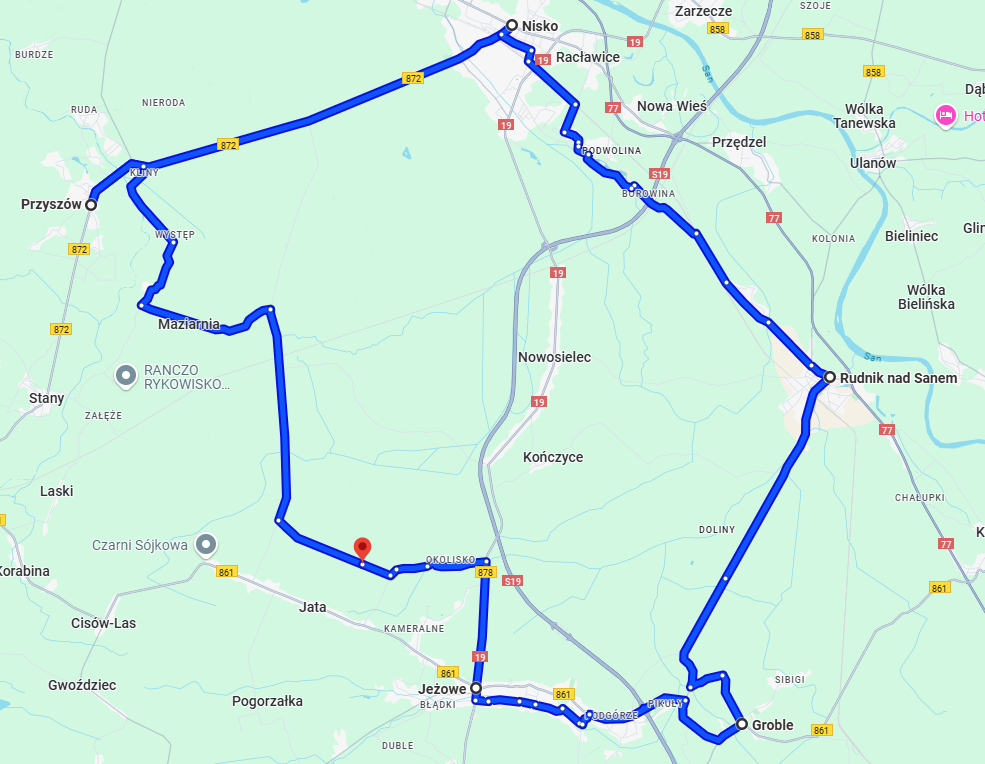

Mapa trasy
Opis trasy
Wyruszamy z miejscowości Zalesie (37-430), kierując się przez malownicze wsie i miasteczka Podkarpacia. To idealna propozycja dla miłośników przyrody, historii i spokojnej jazdy rowerem.
- Zalesie – Start wycieczki, wiejska okolica i zielone tereny.
- Przyszów – Możliwość odpoczynku przy lokalnym sklepie.
- Nisko – Warto zobaczyć park miejski oraz rynek.
- Rudnik nad Sanem – Stolica wikliniarstwa! Wizyta w muzeum wikliny.
- Groble – Spokojna miejscowość z pięknymi widokami.
- Jeżowe – Idealne miejsce na piknik w cieniu drzew.
- Zalesie – Powrót do punktu wyjścia.
Główne atrakcje
- Muzeum Wikliny w Rudniku nad Sanem
- Park Miejski w Nisku
- Trasy przez lasy i łąki – idealne do zdjęć
- Miejsca do odpoczynku i posiłku (ławki, przystanki)
Informacje dodatkowe
- Dystans: ok. 60–70 km
- Trudność: Średnia – trasa dla średniozaawansowanych rowerzystów
- Zabierz ze sobą: wodę, kask, apteczkę, pompkę rowerową